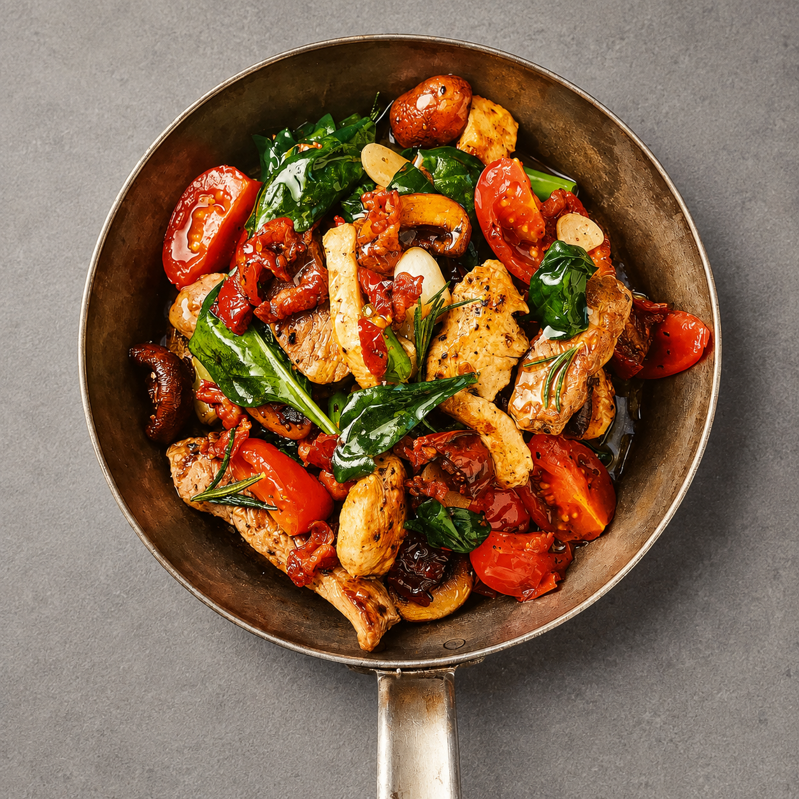

Unsere Klassiker
Italienische Steakpfanne

Zutaten
140 gHähnchenbrustfilet
180 gRumpsteak
4 SBacon
8 Stk.Cherrytomaten
150 gChampignons
50 geingelgte Tomaten
1Knoblauchzehe
2Frühlingszwiebeln
1 ELRosmarinnadeln
1 SchussPassierte Tomaten
Zubereitung
- Hähnchenbrust, Rumpsteak und Bacon in breite Streifen schneiden. Tomaten und Champignons vierteln, getrocknete Tomaten in dünne Streifen und Knoblauch in dünne Scheiben schneiden. Frühlingszwiebeln grob schneiden.
- Olivenöl erhitzen und Hähnchen sowie Bacon ca. 2 Minuten anbraten.
- Rumpsteak, Butter, Tomaten, Champignons, getrocknete Tomaten, Knoblauch, Frühlingszwiebeln und Rosmarin hinzugeben. Mit Salz und Pfeffer würzen und ca. 3 Minuten mitbraten.
- Passierte Tomaten hinzugeben und alles gut vermengen.
- Kurz vor dem Servieren geriebenen Parmesan darübergeben und einmal schwenken.